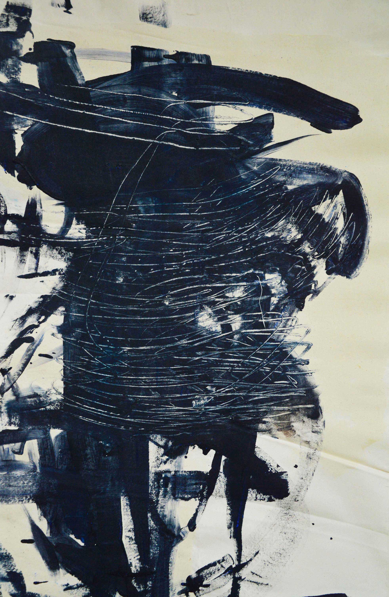

During the War, 2019, mixed media on canvas, 145 x 162 cm

Iceberg Menace, 2019, mixed media on canvas, 145 x 162 cm

Raphanuelle, 2019, mixed media on canvas, 140 x 150 cm

Griffes, 2019, mixed media on canvas, 145 x 160 cm
Griffes, details.

Griffes, details.

Orange et Bleu, gouache on canvas, 140 x 140 cm